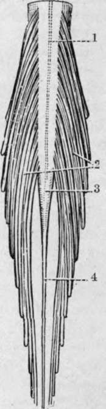
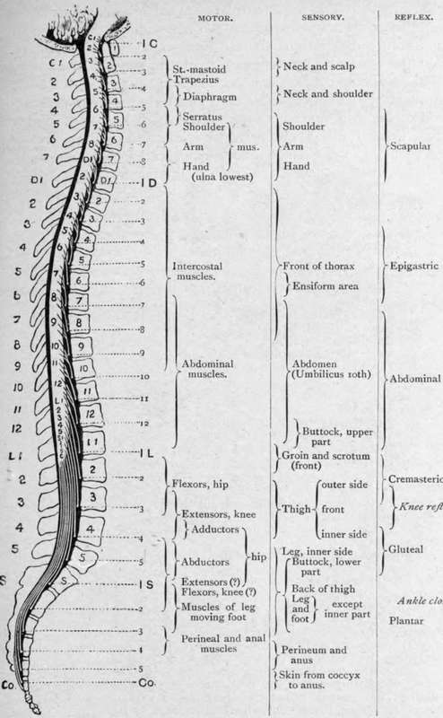

The Cord
Description
This section is from the book "Surgical Anatomy", by John A. C. MacEwen. Also available from Amazon: Surgical Anatomy.
The Cord
In the adult the cord is generally about 18 inches long, extending from the foramen magnum to the lower border of the body of the first lumbar vertebra. It sometimes ends about the depth of a vertebral body above or below this point, and in flexion it is raised about 2/5 inch. At the foramen magnum it becomes continuous with the medulla, while below it tapers to a point-the conus medullaris-from which the filum terminale, composed of pia mater, containing in its upper half nerve elements and continuation of central canal of the cord, is prolonged to the back of the coccyx, running down amidst the cords of the upper sacral nerves, to which the term cauda equina is applied. The spinal meninges extend to the second piece of the sacrum, and thence form a closed cover for the filum terminale. The third sacral spine, therefore, marks the lowest level to which cerebro-spinal fluid may descend in the spinal canal. In early foetal life the cord occupies the whole canal, and at birth it reaches the third lumbar vertebra. The cervical enlargement is most prominent opposite the sixth cervical, and the dorsal enlargement opposite the twelfth dorsal. The former measures about -½ inch from side to side, and the latter slightly less. The space between the spinal dura and the bone is occupied by loose areolar tissue, containing a venous plexus. These veins communicate through the ligamenta subflava with the dorsal spinal veins, which receive blood from the integument and muscles of the back, and thus a thrombosis, or even meningitis, may spread inwards from deep external septic processes. Extensive haemorrhage may result from injur}' involving these veins, the blood gravitating toward the lower end of the canal, and occasionally causing pressure.
The dura, continuous with that of the medulla, is strong and tough, and but loosely attached to the bone. The arachnoid is closely attached to the dura, the subdural space being practically only potential, while the subarachnoid space is extensive and continuous with that of the brain, whence inflammatory conditions (meningitis) and effusions of blood may readily extend. Great increase in pressure may arise in meningitis, and may be relieved by lumbar puncture, the same procedure being adopted for obtaining specimens of cerebro-spinal fluid for investigation in certain diseases, while spinal anaesthesia is produced by injecting local anaesthetics into the spine by a similar puncture. The needle is introduced a little to the side of the spinous processes, on a level with the iliac crests, up and inwards between two of the processes (third to fifth lumbar), the ligamenta subfiava between two laminae being perforated, until the subarachnoid space is reached, the patient meanwhile bending forward. The needle enters the membranes below the termination of the cord, which is thus safe from injury. Normally the cerebrospinal fluid contains 0.05 per cent, of albumin, and is under slight pressure. If the pressure be much reduced, convulsions may follow, as is seen in some cases of spina bifida, with extensive leakage of fluid.
Fig. 15.-The Terminal Part of the Spinal Cord, anp the Cauda Equina. (From Buchanan's " Anatomy.")
1. Linea splendens. | 3. Conns medullaris. |
2. Cauda equina. | 4. Filum terminale. |
The pia mater closely envelopes the cord and in it ramify the vessels supplying the cord, which are derived from the vertebral, intercostal, lumbar, ilio-lumbar, and lateral sacral arteries. Both dura and pia send prolongations along the nerve cords leaving the spine, which in the case of the larger plexuses extend a considerable distance.
Spina bifida is a congenital malformation of the cord or its membranes, associated, as a rule, with defect in the union of the laminae of one or more vertebrae. The most common form is said to be the myelocele, in which the central canal of the cord opens on to a shallow depression on the skin surface. As the cerebro-spinal fluid escapes freely from the aperture, death generally occurs early. The central canal of the cord may dilate and form a protrusion of cord and membranes, known as a syringo-myelocele. Meningomyelocele is the most common form which survives, and consists of a protrusion of membranes and cord, the latter lying as a flattened band on the posterior wall of the cyst. Where the membranes alone are protruded the condition is known as meningocele, and-where there is a defect in the vertebral arches, but no protrusion of membranes or cord, the condition is known as spina bifida occulta. Spina bifida generally affects the lumbar region, but may occasionally occur in the cervical, and very rarely in the dorsal.
The cord lies free within its sheath, suspended in its position by the various nerve roots which it gives off, and surrounded by the arachnoid water-bed.
Concussion of the cord may arise from severe shaking, giving rise to molecular changes in the cord substance, which may result, generally after some time has elapsed, in serious consequences.
Wounds of the cord, without accompanying fracture of the column, are uncommon, save between the occiput, atlas, and axis, unless the wound be made to correspond with the inclination of the spines and laminae, as in lumbar puncture.
Crushing of the cord is generally associated with a lesion of the column, which may either be due to trauma or to disease. In the case of trauma, fracture dislocation is the most common cause, the lesion generally affecting the upper portion of the cord. Thus in the atlo-axoid region death frequently results, as in hanging, while severe injury to the cord often accompanies damage to the cervico-dorsal region, owing to the mobility of the spine and small size of the bodies permitting of considerable displacement. In the lower dorsal region displacement is less likely to occur, but is generally pronounced when it does occur, while the cord only extends to the upper extremity of the lumbar region, where displacement is easily caused by very severe injury. In traumatic cases the lesion is produced suddenly, and, the cord having no time to adapt itself to the pressure, a small lesion is likely to produce graver results than in chronic cases. Chronic conditions may be due to Pott's disease, with marked angular deformity ; less often to extreme scoliosis, rheumatoid arthritis, etc. ; while tumours growing in connection with the membranes similarly may cause pressure on the cord. It is often of importance surgically to be able to diagnose the site of a lesion from the symptoms, where the external evidence of injury does not afford a sufficient guide. In this connection it is necessary to remember that the nerve trunks generally arise from the cord some distance above the point of emergence from the canal. Thus, while the first and second cervical run almost horizontally outwards, the other nerves gradually pursue more oblique courses, until the lowest trunks run almost vertically downwards. The first seven cervical nerves emerge above their corresponding vertebrae, while the eighth emerges between the seventh cervical and first dorsal vertebrae. The dorsal, lumbar, and sacral nerves all emerge below their respective vertebrae. The points of origin of the various nerves are given in Fig. 16 (q.v.). As each nerve runs down within the canal from its point of origin to its exit, a nerve belonging to a higher segment may be damaged by an injury at a lower level, thus producing what might at first appear to be a mixed lesion ; while sometimes the cord may escape, and the nerves alone be damaged. In fracture dislocations due to indirect violence the motor columns generally suffer more than the sensory, and may alone be affected. Loss 0f reflex action in the part of the body supplied by the damaged segment generally points to destruction of the grey matter at that point, with loss of the reflex arc. From want of proper control, also, the reflexes below the point of lesion are generally exaggerated. The effects of lesions at various levels are given in tabular form :
Fig. 16.-The Approximate Relation to the Spinal Nerves of the Various Motor, Sensory, and Reflex Functions of the Spinal Cord. (From Cowers' " Nervous System.").
Cervical 1 to 3
Often instant death.
Complete paralysis below head.
Asphyxia.
Cervical 3 to Dorsal 2
Motor and sensory paralysis, including arms if above second dorsal.
Diaphragmatic breathing if below fourth or fifth cervical (a). Slow pulse (b). Contracted pupils.
Vomiting and persistent hiccough (6). Incontinence of urine and faeces (c). Priapism.
Dorsal 2 to 10
Motor and sensory paralysis of abdomen and lower limbs. Diaphragm assisted by intercostals below sixth dorsal. Incontinence of urine and fasces (c). Priapism.
Dorsal 11 and 12 and lumbar
Incomplete paraplegia and anaesthesia, with zone of hyperesthesia.
Bladder distended at first, with subsequent control (c).
(a) Phrenic nerve arises from third, fourth, and fifth cervical, but especially fourth.
(6) Effects upon vagus via spinal accessory, which is given off about sixth or seventh cervical.
(c) The vesical and rectal centres are situated in the lumbar enlargement. Normally, when these visci become distended, a sensory impulse is conveyed to the centres in the lumbar enlargement. These centres, however, are controlled from the brain, and hence cannot act without volition on the part of the patient. Where the cord is damaged above the centre, the inhibitory fibres from the brain cannot control the centre, which then (after the first shock of the accident, producing retention, has passed off) acts automatically without any volitional control, emptying these visci when distended. If the centres or the nerves between them and the bladder and rectum be damaged, then there is complete loss of control, with incontinence of urine and faeces.
When,, the cord is crushed by injury or disease, it may be necessary to perform a laminectomy for the relief of the condition. A median incision is made over the affected spines, the muscles shelled on either side, the laminae of several vertebrae divided, and an osteo-ligamentous flap lifted up, after cutting the supra- and interspinous ligaments and liga-menta subflava between the flap and the part to be lifted (Macewen). The parts are then inspected, the cord being cautiously turned to either side for inspection of the underlying structures, and then the bony projection or tumour removed. The operation is not likely to be successful, unless the spinal pulsation is fairly restored. It is undesirable to open the membranes, unless the lesion be situated within them. In this manner pressure from dislocations, angular curvature, tumours, etc., may be removed, and in some cases the primary focus in Pott's disease may thus be successfully eradicated. Haemorrhage is not excessive, and is quite controllable.
Continue to: